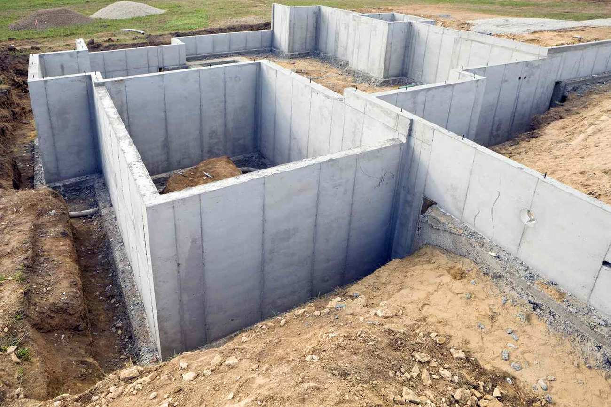

Foundations & Flatwork
Footings, foundations and slabs poured level, square and to code — for garages, shops, sheds, additions and new builds across Cache Valley.

The Part Everything Else Sits On
A foundation is the one part of a project you can't afford to get wrong. In Cache Valley that means footings poured below the frost line so they don't heave, proper reinforcement, and a slab that's dead level and square for whatever goes on top of it. We handle the layout, excavation prep, forms, rebar and pour, and we build to your local code and inspector's requirements.
We pour foundations and flatwork throughout Logan, North Logan, Smithfield, Providence, Hyrum, Nibley and across Cache Valley.
What We Pour
- Footings & foundations — for new builds, additions and outbuildings.
- Garage & shop slabs — thickened and reinforced for vehicle and equipment loads.
- Shed & outbuilding pads — level pads sized to your structure.
- Monolithic & stem-wall slabs — the right system for your build.
- Equipment & AC pads — small flatwork done right.
Built to Code, Built to Last
- Footings below the local frost line to prevent winter heave
- Compacted base and proper drainage
- Rebar and mesh sized to the load
- Level, square pours your builder or inspector can sign off on
Foundation & Flatwork FAQ
How deep do footings need to be here?
Below the local frost line, so they don't heave in winter. In the Logan area that means well below grade — we always pour to the depth your code and inspector require.
Do you pour garage and shop foundations?
Yes — footings and slabs for garages, shops, sheds, additions and outbuildings, level and square, reinforced and to code.
Will I need a permit?
Most structural foundations and many slabs require a permit and inspection from your city or Cache County. We pour to code; check with your local building department on permits before we start.
Need a Foundation or Slab?
Tell us about your project and we'll schedule a free on-site estimate anywhere in Cache Valley — usually within 24 hours.